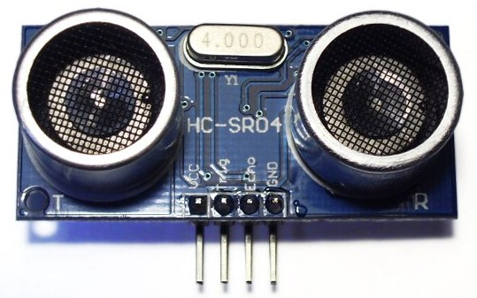
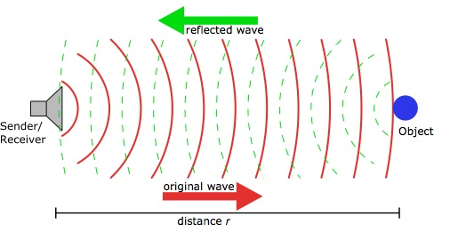
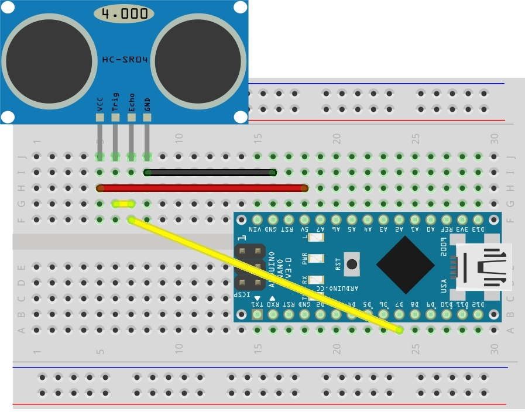

Welcome to
NodeBots Melbourne
September Workshop
UltraSonic Sensors

Agenda
- What are ultrasonic sensors?
- How do you make them work?
- Applications
What are ultrasonic sensors?
How they work
How they work
Caluculating distance
Speed of sound is: ~340m/s
Time to travel 1cm and return: ~58.8us
tus / 58.8us = cm
eg: 150us / 58.8 = ~2.55cm
Wiring
Basic example
var five = require("johnny-five"),
board = new five.Board();
board.on("ready", function() {
var ping = new five.Ping(7);
ping.on("change", function( err, value ) {
console.log('Object is ' + this.cm + ' cm away');
});
});
Collision stop
var five = require("johnny-five"),
board = new five.Board();
board.on("ready", function() {
var ping = new five.Ping(7);
ping.on("change", function( err, value ) {
if (this.cm < 5) {
console.log("STOP!!!!");
} else {
console.log(".");
}
});
});
Applications
- Collision avoidance on a bot
- Proximity detection (trigger animate / action on proximity)
- Removal detection (eg door open).
- Web based sonar detector